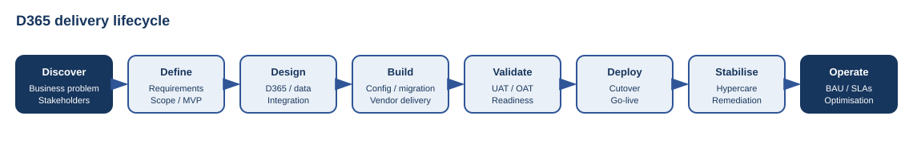
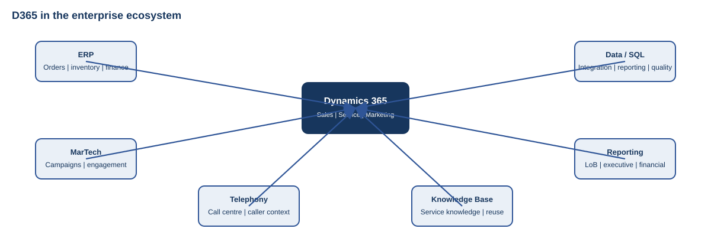

From requirements and program reset through go-live, hypercare and transition to BAU
Organisation and identifying details intentionally omitted.
This case study describes the recovery and delivery of a Microsoft Dynamics 365 customer platform after two unsuccessful vendor-led implementation attempts. The program was reset around clearer scope, business ownership, formal project governance, communication, vendor and contract risk management, integration architecture, management reporting and a defined operating-model transition.

The program was reframed as a business-process, data, integration and adoption program rather than a CRM configuration exercise. Discovery covered business requirements, user stories, the sales journey, customer service case management, knowledge management, telephony/call-centre integration and the balance between common processes and justified local variation.

D365 was treated as part of a wider enterprise ecosystem, integrating with ERP, MarTech and data platforms to connect customer activity to operational and financial outcomes.
Reporting was designed with the platform rather than added after go-live. This included cross-module CRM activity, line-of-business reporting, pipeline and conversion, service levels and case ageing, platform adoption, and linkage to ERP and financial outcomes using consistent definitions and governed data.
Where incumbent vendor capability was insufficient, specialist delivery capability was introduced while SOWs, scope, milestones, acceptance criteria, commercial terms, contract changes and supplier performance were actively managed.

The program used RACI, Steering Committee governance, RAID, matrix management, change control, status reporting and formal stakeholder communications. End-user communications and role-based training were delivered across geographically distributed teams, with virtual sessions, guides, recordings and local champions.
Delivery included configuration, ERP and MarTech integration, data cleansing and migration, demonstrations, UAT, OAT, defect triage, readiness criteria, cutover planning and controlled go-live.
Hypercare provided a structured bridge into steady-state operations. Platform ownership, support SLAs, vendor responsibilities, as-built documentation, change/release management, reporting ownership, knowledge transfer and the enhancement backlog were transitioned into BAU before temporary delivery resources exited.